<<!DOCTYPE html>
<html>
  <head>
    <title>EE568-Selected Topics in Electrical Machines</title>
    <meta http-equiv="Content-Type" content="text/html; charset=UTF-8"/>
    <style type="text/css">
      @import url(http://fonts.googleapis.com/css?family=Yanone+Kaffeesatz);
      @import url(http://fonts.googleapis.com/css?family=Droid+Serif:400,700,400italic);
      @import url(http://fonts.googleapis.com/css?family=Ubuntu+Mono:400,700,400italic);

      body { font-family: 'Droid Serif'; }
      h1, h2, h3 {
        font-family: 'Yanone Kaffeesatz';
        font-weight: normal;
      }
      .remark-code, .remark-inline-code { font-family: 'Ubuntu Mono'; }
    </style>
  </head>
  <body>
    <textarea id="source">

class: center, middle

# EE-568 Selected Topics in Electrical Machines

## Ozan Keysan

[ozan.keysan.me](http://ozan.keysan.me)

Office: C-113 <span class="meta">&#8226;</span> Tel: 210 7586

---
# Permanent Magnets Machines


### Becoming more and more popular with high efficiency and high torque density

---
#Applications


---
# History

---
# Neodymium Magnets (NdFeB)

### Strongest and most common (60% market share)
### Expensive (600 TL/kg, $85/kg)


---
# Magnetization Directions


---
#B-H Curve of a Magnet

--
### Desired Properties:
--

### Large Remanence flux density (retentivity, point that crosses B axis)
--

### Large [coercivity](http://hyperphysics.phy-astr.gsu.edu/hbase/solids/imgsol/coercivity.gif) (point that crosses H axis)
--


---
# Magnet Strength Comparison

---
## Intrinsic vs Normal B-H Charateristics


### We can only measure normal curve

[More info about magnets](http://what-when-how.com/electric-motors/hard-magnetic-materials-permanent-magnets-electric-motors/), [Magnet Guide](http://www.allianceorg.com/pdfs/Magnet_Tutorial_v85_1.pdf), [Demagnetization](http://www.shinetsu-rare-earth-magnet.jp/e/design/)
---
# Demagnetization of PMs


### If external magnetic fields get below the knee point, PM will lose strength
---

# Demagnetization of PMs

## Recoil Line

### Magnets will loose strength if the reverse magnetic field goes beyond the knee point.


---
# Magnets with Temperature
### Real Datasheet of Sm-Co (Samarium-Cobalt Magnet)


### Magnets become less stable with increasing temperature.
---
# What is Magnetic Force?

### [Why magnets attract each other?](http://www.youtube.com/watch?v=uTcuDprmues) by Richard Feynman
--

### [Magnets and Special Relativity](https://www.youtube.com/watch?v=1TKSfAkWWN0)

Reading Suggestion: [Eminim Şaka Yapıyorsunuz Bay Feynman](http://www.idefix.com/Kitap/Eminim-Saka-Yapiyorsunuz-Bay-Feynman-Merakli-Bir-Sahsiyetin-Maceralari/Richard-P-Feynman/Bilim/Populer-Bilim/urunno=0000000427673)


---
# Magnetic Circuits with Magnets, Load Line

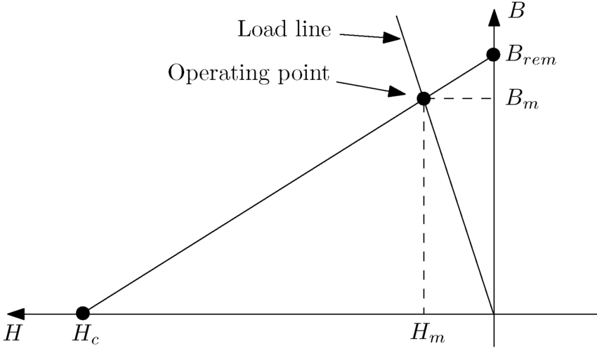

[More info on load lines](https://ocw.mit.edu/courses/electrical-engineering-and-computer-science/6-061-introduction-to-electric-power-systems-spring-2011/readings/MIT6_061S11_ch11.pdf), 

---
# Magnetic Circuits with Magnets, Load Line

## Be aware of the temperature variation

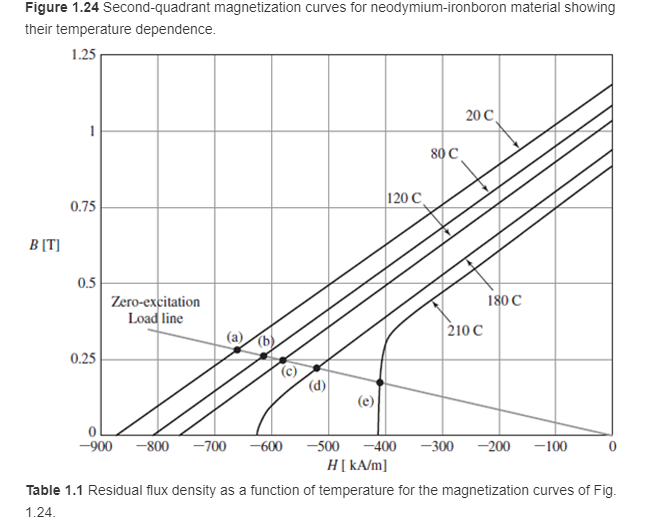

# The magnet can lose some of its strength

---
# Magnet Grades

## A definition for its strength (i.e. max. stored energy)


---
# Magnet Grades

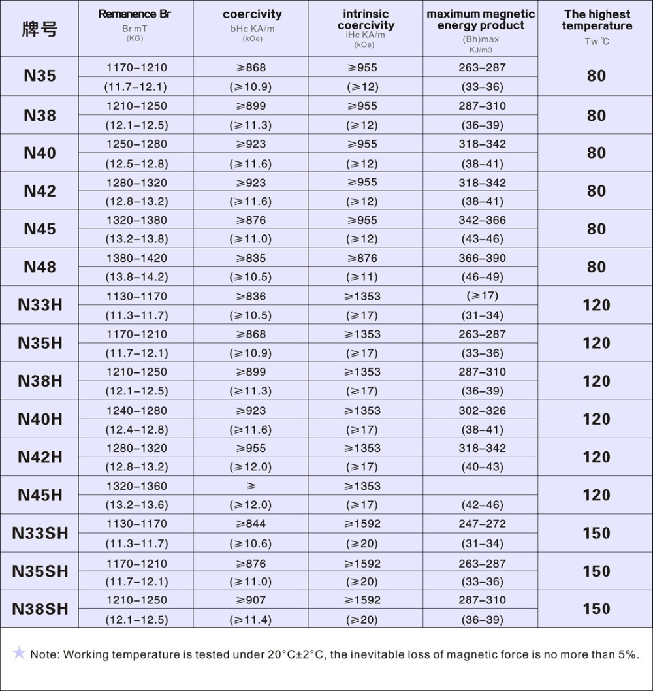

---
# Magnet Grades

## Last letter defines the working temperature

- ## No Letter:  < 80 C
--

- ## M: Medium, <100 C
--


- ## H: High, <120 C
--

- ## SH: Super High, <150 C

---

# Magnet Coatings

### Beware NdFeB magnets are prone to corrosion and need to be coated
--

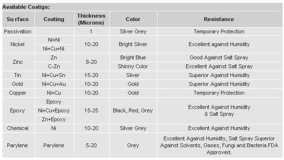

---
# Modelling of Magnets

## Operation range of a magnet

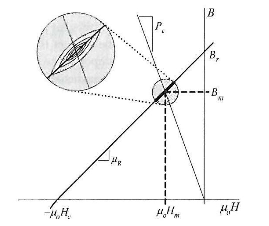

---
# Modelling of Magnets

## Equivalent Circuit (Flux Source)

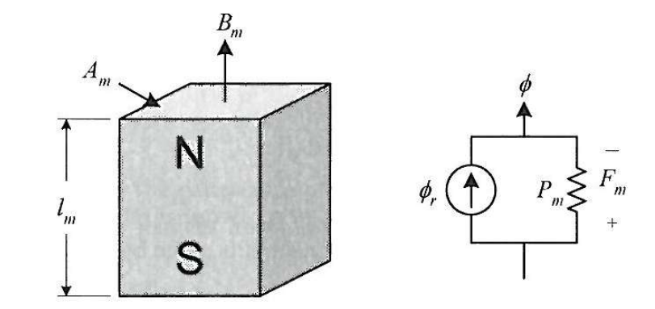

---
# Modelling of Magnets

## Thevenin Equivalent Circuit (MMF Source)

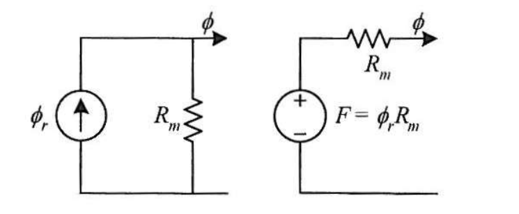

---
# Modelling of Magnets

## If the magnet is operating in linear region

### \\(B_m = B_r + \mu_R \mu_0 H_m \\)

### \\(H_m\\) is negative (third quadrant in BH graph)
--

### \\(\Phi = B_m A_m \\)
--
\\(\ = B_r A_m + \mu_R \mu_0 A_m H_m  \\)
--

### \\(\Phi = B_m A_m \\)
--
\\(\ = \Phi_r + \dfrac{F_m}{R_m} \\)

---
# Modelling of Magnets

### \\(\Phi =  \Phi_r + \dfrac{F_m}{R_m} \\)
--

### A constant flux source with a reluctance in parallel (i.e Norton circuit)

### \\(R_m = \dfrac{l_m}{ \mu_0 \mu_r A_m} \\)

### \\(P_m = \dfrac{1}{R_m} \\): Permeance 
---
## Thevenin Equivalent Circuit (MMF Source)


### Magnet can be considered as a coil (MMF source) with:

### \\(NI =\\)
--
\\(\Phi_r R_m =\\)
--
\\(B_r A_m \dfrac{l_m}{\mu_o \mu_r A_m} \\)
--
\\(=  \dfrac{B_r l_m}{\mu_o \mu_r} \\)

---
# Group Exercise-#1
--

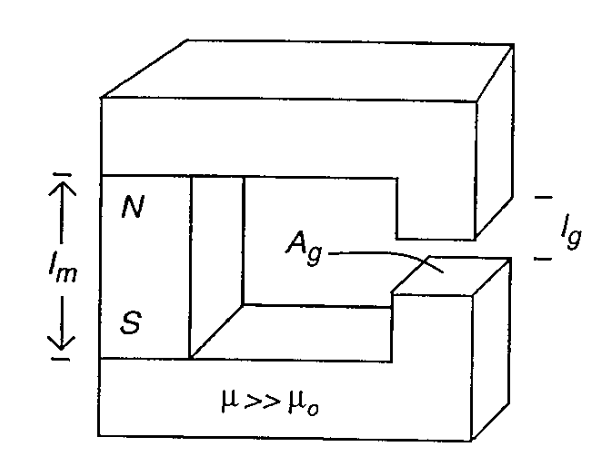

### Calculate the airgap flux density for:

---
# Group Exercise- #2 
--

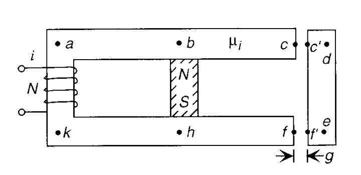

### Draw the magnetic equivalent circuit (ignore leakage)

---
# Group Exercise- #2 
--

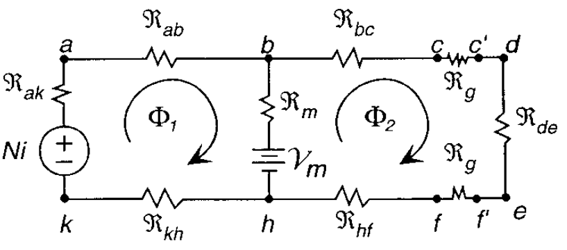

###  Equivalent magnetic circuit


---
# Group Exercise-#3
--

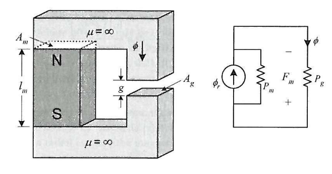

### Calculate the airgap flux density for:

---
# Group Exercise- #4 
--

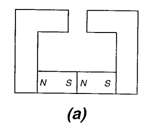
w a
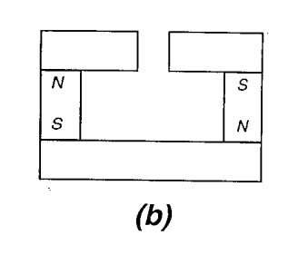
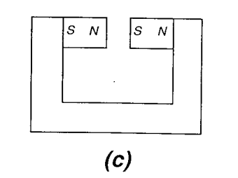

### Which one creates the most flux density (don't ignore leakage flux)?


---
# General PM Machine Structure
--

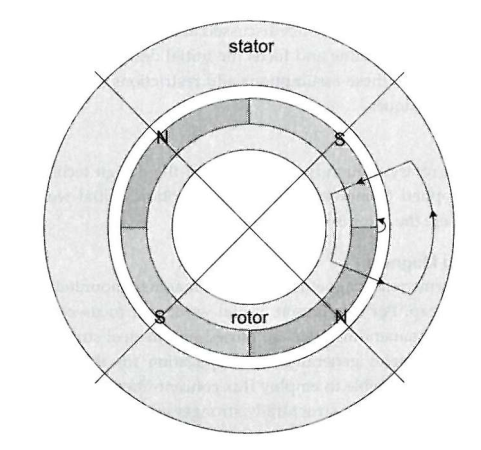

### Surface Mount Permanent Magnet Machine

---
# Magnetic Circuit Model

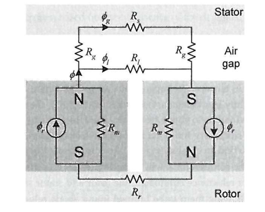

### SMPM magnetic circuit

---
# Magnetic Circuit Model

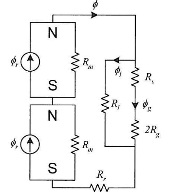

### Series components combined

---
# Magnetic Circuit Model

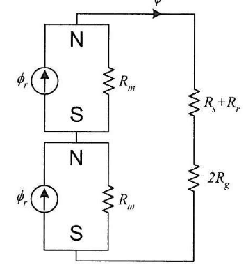

### Leakage ignored

---
# Magnetic Circuit Model

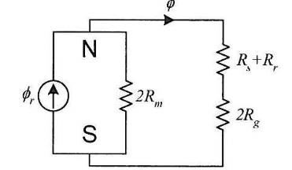

### Magnets combined (it is possible to use half-symmetry too)

---
# Magnetic Circuit Model

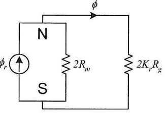

### Steel reluctance ignored (\\(K_r\\) factor added, \\(Kr \gtrapprox 1\\))
---

# Magnetic Circuit Model

## Ideal Airgap Flux Distribution

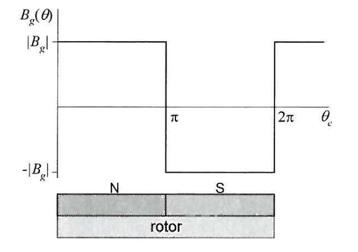

---
### Let's see the induced voltage waveform for a full-pitch coil
--

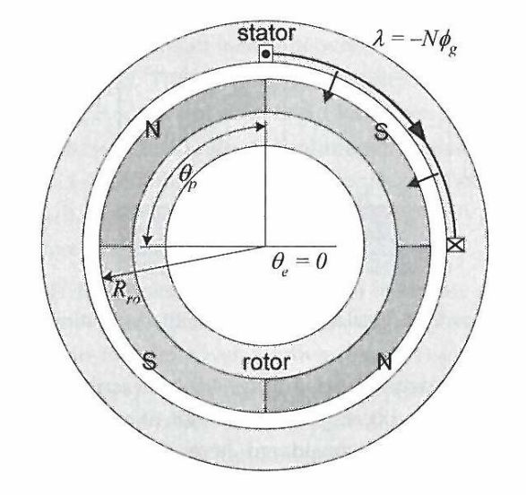

---
### Flux and Induced Voltage in the Coil
--

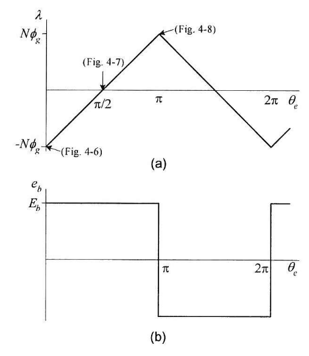

---
### How about a fractional-pitch coil ?
--

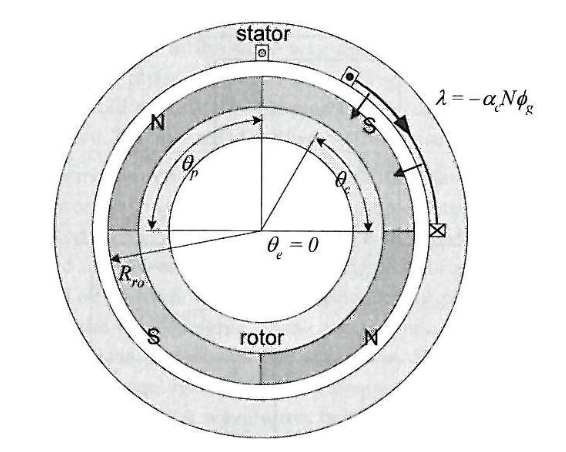

---
### Flux and Induced Voltage in the Fractional-Pitch Coil
--

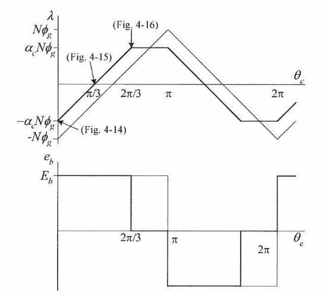

---
## How about fractional pitch magnets?
--

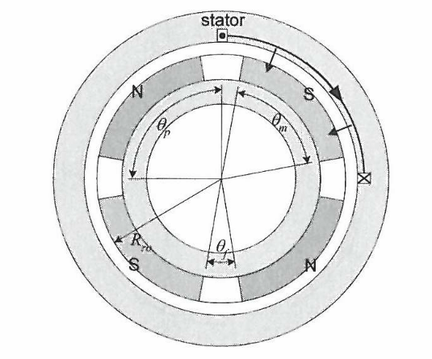

## Reduces the leakage flux between adjacent magnets

---
## Induced voltage in a fractional pitch magnets


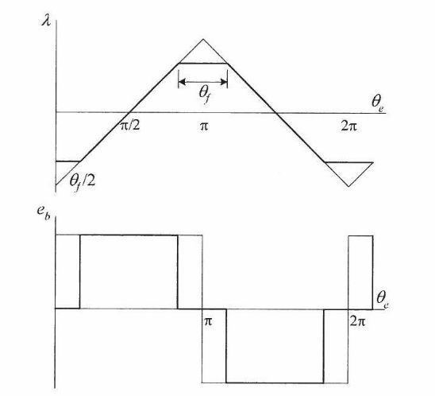

---
# Multiple Coils 
--

### Nslot= 15, Npoles= 4

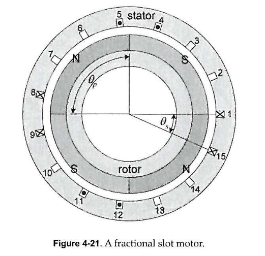


---
# Multiple Coils 
--

### Nslot= 15, Npoles= 4, 192 degree coil span

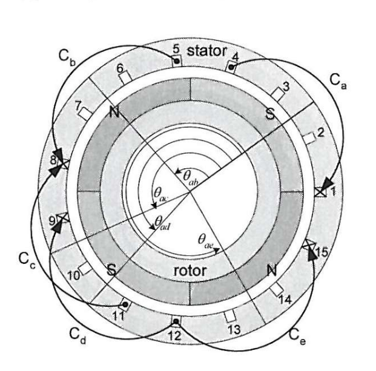

---
# Multiple Coils 


### Flux Linkage in Single Coil

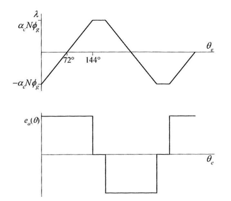

---
# Multiple Coils 


### Induced Voltage in Single Coils

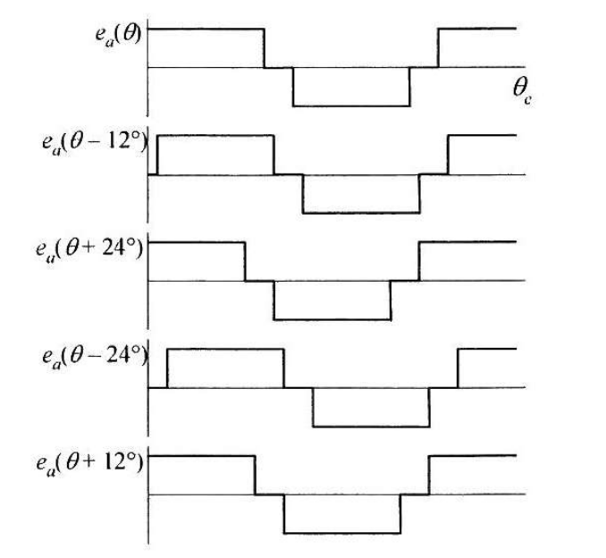

---
# Multiple Coils 


### Total Induced Voltage

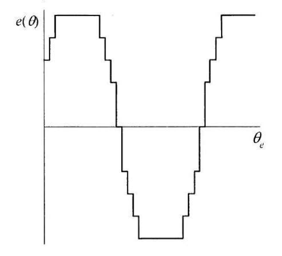

---
# PMSM vs BLDC 
--

## Permanent Magnet Synchronous Motor


---
# PMSM vs BLDC 
--

## Brushless DC Motor

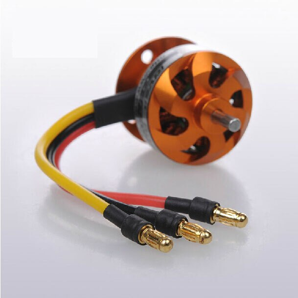

### Usually preferred in low cost, small motor

---
# PMSM 
--

## Sinusoidal Back-EMF

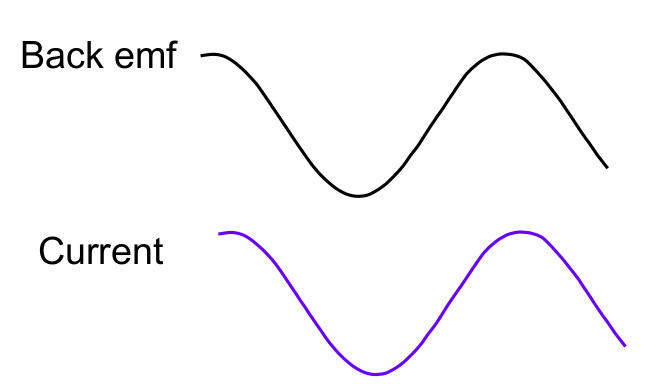

### Sinusoidal back-emf, vector control, precise motion control

---
# BLDC 
--

## Trapezoidal Back-EMF

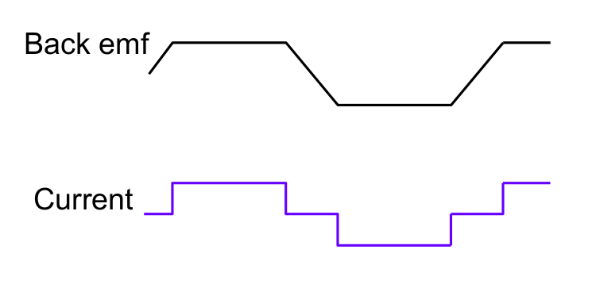

### Driven by square wave pulses, small power/low cost applications

---
# D-Q Axes Revisited
--

## SM-PMSM
--
 (Surface Mount Permanent Magnet Synchronous Machine)

--

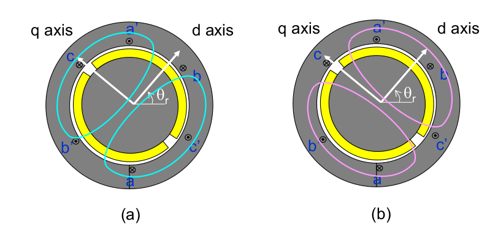
--

## Ld = Lq for SMPM machines


---
# D-Q Axes Revisited
--

## IPM
--
 (Interior Permanent Magnet Synchronous Machine)

--

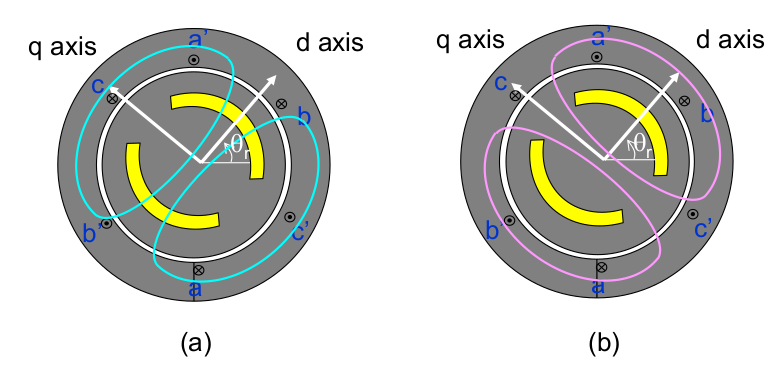

--

## Lq > Ld for IPM machines (as \\(\mu_r \approx 1 \\) for PMs)

---
    </textarea>
    <script src="http://gnab.github.io/remark/downloads/remark-latest.min.js" type="text/javascript"></script>
    <script src="https://cdnjs.cloudflare.com/ajax/libs/mathjax/2.7.1/MathJax.js?config=TeX-AMS_HTML&delayStartupUntil=configured" type="text/javascript"></script>
    <script type="text/javascript">
      var slideshow = remark.create({countIncrementalSlides: false});

      // Setup MathJax
      MathJax.Hub.Config({
          tex2jax: {
          skipTags: ['script', 'noscript', 'style', 'textarea', 'pre']
          }
      });
      MathJax.Hub.Queue(function() {
          $(MathJax.Hub.getAllJax()).map(function(index, elem) {
              return(elem.SourceElement());
          }).parent().addClass('has-jax');
      });

      MathJax.Hub.Configured();
    </script>
  </body>
</html>
